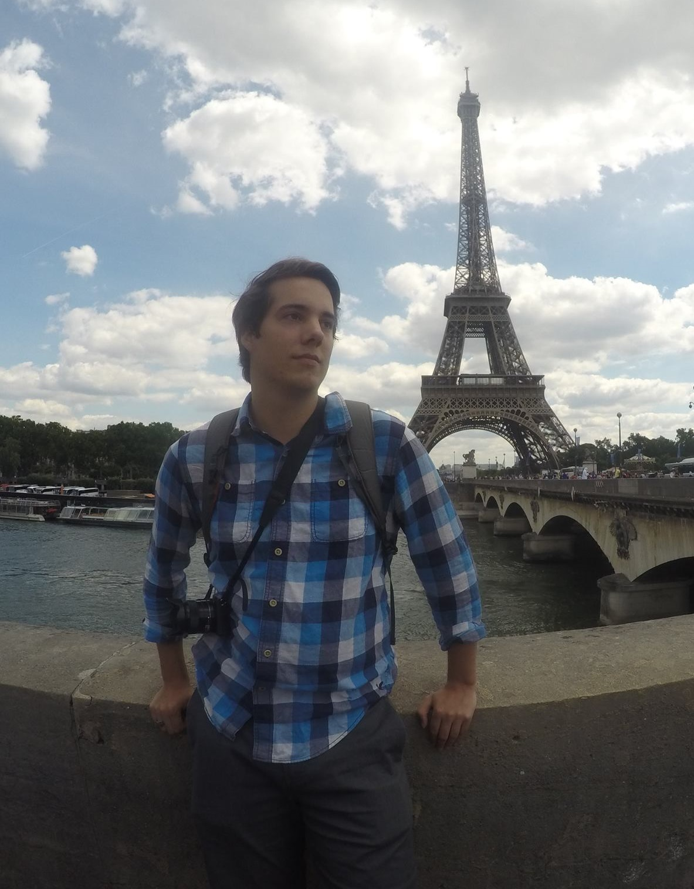

 |
|
Welcome!
About Me
I am an undergraduate student at MIT earning a Bachelor's Degree in
Materials Science and Engineering, with a possible minor in Mechanical Engineering.
I'm primarily interested in electrochemistry, clean forms of transporation, and mechanics of materials. I have been
involved in various materials science projects
and research over my three years here, ranging from lab work to hands-on
prototyping and manufacturing.
I've participated in research at both the MIT Electrochemical Energy
Lab and the MIT Grossman group over the past few years, and I'm starting
to get involved this semester in Prof. Gallant's lab as well, with goals of designing
high temperature, solid state devices for the electrochemical conversion of
various harmful greenhouse gases (NOx and SO2) using Lithium metal. I've also been involved in
numerous interdisciplinary team projects including a joint MIT and U-Tokyo
research symposium where a group of students traveled to the University of
Tokyo to present various research topics.
Finally, I've also been involved in the MIT Electric Vehicle Team over
the past few years, with our main project last year being the building
of an electric racing motorcycle for the Pikes Peak International Hill Climb.
We placed second in our class. Our race video and pictures can be seen on the activies page.
I've also joined the MIT Electric FSAE team this semester.
Outside of school, I'm an
avid backpacker, camper, hiker, rock climber, canoer, rower,
cook, baker, and entrepreneur.
Research Interests
- Mechanics of Materials
- Electrochemistry (Lithium-Ion in Particular)
- Metallurgy
- Power Electronics
- Renewable Energy
Clubs and Organizations
- MIT Electrochemical Energy Lab - UROP
- MIT Grossman Group - UROP
- MIT Electric Vehicle Team (EVT)
- MIT FSAE
- MIT Outdoors Club
- MIT Energy Club
- Boy Scouts of America
Other Interests
- Camping/Backpacking/Canoeing
- Cooking/Baking
- Programming
- Electronics
- Reddit - r/spacex, r/tesla, r/science, etc.
- Consumer Technology
|